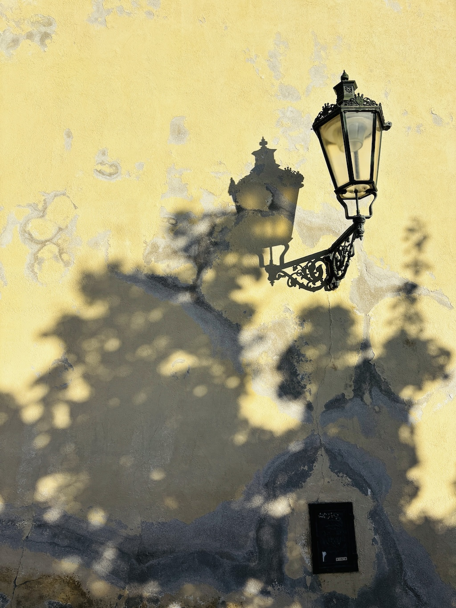
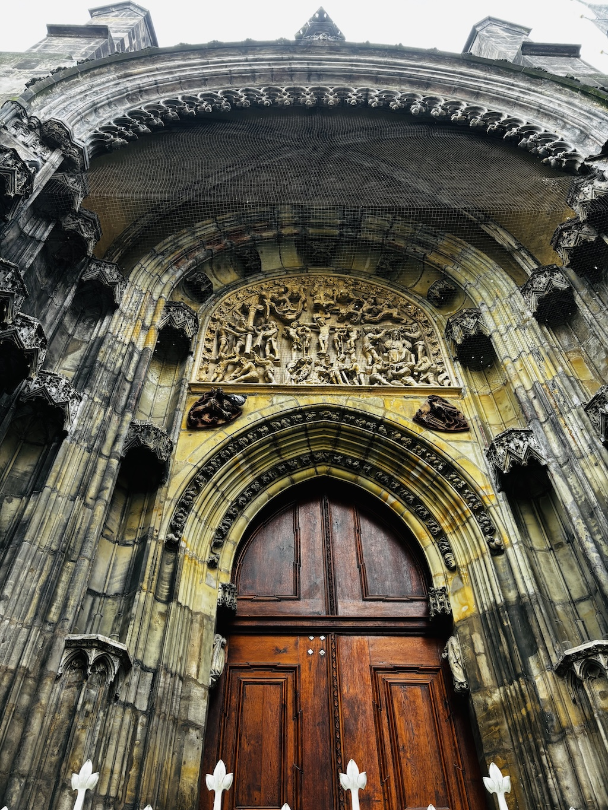
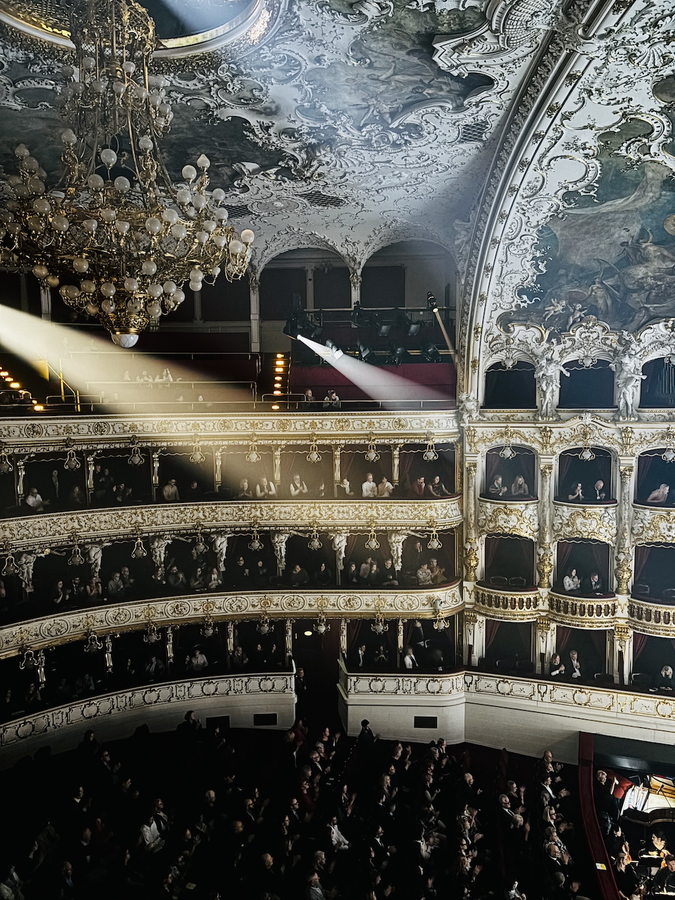
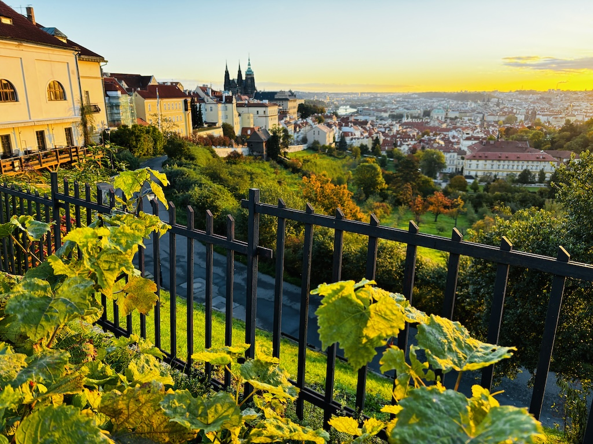
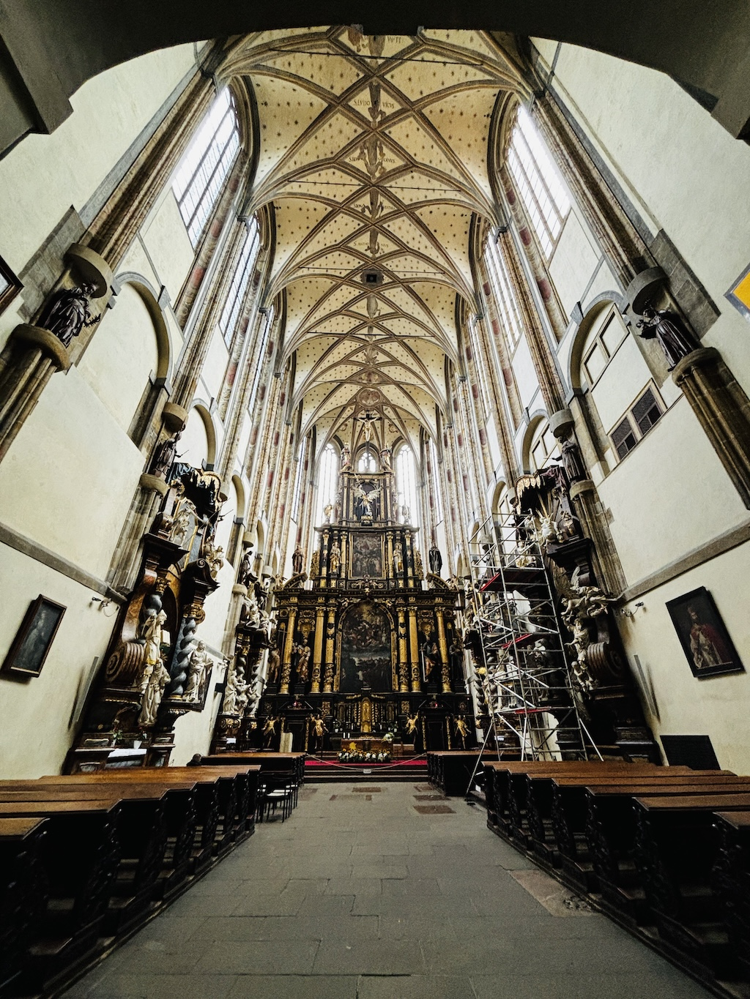
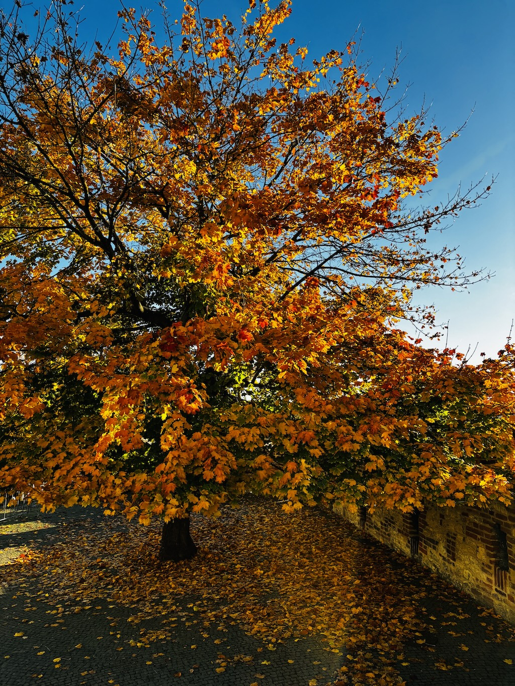

在十字與時鐘之間的旅程
一個異鄉人在布拉格的朝聖之路

我腦子裡曾有個念頭，想許個願。不是那種對著流星匆匆說出的願望，而是那種長久壓在心底的輕聲：希望有一天，在一個秋天，能走進一座陌生的城市。
那裡的樹葉該是熟成的顏色——黃裡帶紅，紅裡又滲著一點綠；空氣裡應該有歷史的氣味，石頭的、木頭的、鐘聲的；我想看到老教堂的塔尖，聽它在午後的光線裡敲響。
後來，這個願望就這樣成真了。我來到了布拉格。
那是一座名字一說出口就有旋律的城市。在機場外的風裡，我聞到一股介於涼和甜之間的味道——那是秋天開始落葉時的氣息。從車窗望出去，河水像一條緩慢的琴弦，沿著城市的身軀流過。古老的屋瓦像被時間的手摸過，顏色沉穩。
出發前，我對這城市其實沒多少了解。只是知道這裡有橋、有鐘、有無數的塔尖。直到我開始查資料，才發現這城市的靈魂是由信仰與反叛交織而成的。
在馬丁·路德釘下九十五條論綱的一百年前，這裡的一位學者——楊·胡斯（Jan Hus），在講壇上用母語講道，反對販賣贖罪券，呼喊真理。他的話像火，點燃了一個時代的覺醒，也讓自己成為灰燼。他死於火刑，但他的聲音，卻在這座城市的石縫裡回蕩了幾百年。
我後來想，也許上帝並不是讓人一下就明白祂的意思，祂讓你先走錯幾次路，經歷遠行與疑惑，然後在某個地方，用一種不是聲音的方式，讓你重新聽見祂。
我這次來，是為了一場會議。白天要坐在會場裡聽報告、看螢幕、記筆記。但到了晚上，我就成了自由的人。我在地圖上看見旅館附近有一座名字熟悉的教堂——St. Nicholas Church。它每天都有音樂會，我想，這或許是個不錯的入口。
有些旅程是你安排的，但也有些，是被安排的。我還不知道，那場音樂會，會成為我整個布拉格之行的起點。

那晚的風冷，帶著河水的味道。我從舊城廣場走過去，石板路被路燈照得發亮，像濕的紙。遠遠就看見教堂的圓頂，亮著淡金色的光。那是聖尼古拉斯教堂——布拉格最典雅的一座，也是我在這城市裡的第一個約會。
大概是給遊客設計的，音樂會曲目相當簡要，只說有巴哈，莫札特，德弗札特跟其他音樂。我進去時，教堂內部空曠，空氣有股淡淡的蠟與冷石的味道。地面鋪著灰白的石磚，走起來會微微回聲。天頂高得幾乎看不見邊，畫著一整片天使和雲。光從圓窗傾斜下來，落在木椅上，像一層柔和的塵。
做禮拜用的木椅已經坐滿，後面還有設置一些椅子。大部分是年紀比較大的長者，頭髮灰白。在教堂裡乖乖地坐著，等著，安靜無聲。鐘聲一響，大門緩緩闔上。世界忽然安靜下來，只剩下裡面的氣息。
兩位音樂家上前。一位拿著小號，黑衣、挺拔；另一位坐在管風琴後，拉開音栓，手指在鍵上試音。第一首是巴赫的宗教曲，莊嚴、厚實。音符像階梯，一層層往上，整個教堂都跟著共鳴，牆壁、穹頂、人的胸腔。
所謂的其他曲目開始時，我聽出了旋律——哈利波特的主題曲。那一刻我有些訝異，也有些微笑。在幾百年前，這樣的曲子若被聽見，大概會被指控為異端。而如今，它在教堂裡響起，堂皇而無罪。布拉格曾是波希米亞最虔誠的地方，如今卻成了歐洲信主比例最低的國家。信仰褪色了，但鐘聲仍然在。
讓我耳朵張開的，是小號響起的《Gabriel’s Oboe》。那首來自電影《教會》的主題曲，一位耶穌會神父爬上了瀑布到了原住民的地盤。他用一段音樂當作護身符，展開了艱困教區的使命。旋律一開始是祈禱的，然後慢慢展開，像水流過石縫。管風琴的低音托著它，像土地支撐著光。我閉上眼。那不是演奏，而是對話。一個人與時間對話，與神對話，也與自己對話。
聲音在穹頂間繞了一圈又一圈，有一種延遲的回音，像遠方有人在輕聲附和。信仰，未必需要有一個答案，在這樣的聲音裡靜下來——讓自己被溫柔包圍，反而說明了很多東西。
最後一首是〈Amazing Grace〉。小號吹得乾淨，沒有裝飾；管風琴在最後一個音上慢慢放低，像光滑進夜裡。沒有人急著鼓掌，只聽見呼吸與衣袖摩擦的聲音。
大門重新開啟，夜風灌進來，吹散了燭火，也帶進外頭的街聲。我走出去，抬頭望那圓頂，燈光仍閃著。石板路上有人唱歌，河面有倒影。文字並非是唯一的方式，透過音樂，祂也能被聽見。

這一夜的布拉格依舊發著光。
我沒有走向金頂的國家劇院，而是來到火車總站旁、外牆莊嚴克制的布拉格國家歌劇院（Prague State Opera）。十九世紀末的線條把立面收得很乾淨——這是新文藝復興的比例與節奏，門楣、壁柱與女兒牆彼此呼應，像一段仍在運作的歐洲機械鐘。這座劇院由維也納名匠 Fellner & Helmer 所設計，1888 年以「新德意志劇院」之名開幕，自此在布拉格劇場地圖上留下另一條血脈。
推門而入，空氣明亮了起來：紅絨與鍍金在燈下層疊，包廂圍成馬蹄形，天頂的畫與巨大的吊燈懸在樂池上方——這是新洛可可的華美，但沒有浮誇，反而像在提醒你今晚將進行一場嚴肅的儀式。這裡的舞台與席位規模，在布拉格幾座劇院之中依然名列前茅，聲場乾淨，細節銳利。
我忽然想到這座劇院的身世——它曾在二十世紀更名、蛻變，甚至沉默；而在 2020 年 1 月 5 日，歷經近三年的整修，它又在那一天重新點燈，與 1888 年的自己相互致意。也難怪，這裡的每一次呼吸都帶著一點歷史的金粉與灰塵。
我坐在二樓的包廂，扶手冰涼，座椅厚實，靠背深彎，人們穿著正式，衣料摩擦聲低過交談。整個廳堂似乎在等待：燈暗，音樂起。今晚的曲目是 Idomeneo──一齣關於誓言與命運的歌劇。舞台的布景用深藍與星光色勾勒出遠海與暴風，角色在那裡與神對話、與自身掙扎。
音樂響起——因為這座劇院的聲學設計與空間比例極為精良，第一個弦音像刀刃一樣切入空氣。我彷彿能感受到歷史的回聲：1888 年 1 月 5 日，這裡以瓦格納的《紐倫堡的名歌手》作為開幕劇目，當時還稱為「新德意志劇院（Neues deutsches Theater）」。
在幕間，我靜靜走出包廂，經過長廊，牆上有鏡子映出整個觀眾席，我看到自己倒影：西裝稍微皺了，臉被燈光切成兩半，一半明亮、一半陰影。鏡中有人舉香檳、有人靜立窗邊，看著夜景。那一刻，我覺得自己不只是觀眾──我在某種程度，也成為了劇場的一部分。
再度入席，燈光重新亮起，合唱如潮水般湧來。主角跪地、呼喊，光從後方灑下，把他的面孔拉成戲劇的剪影。那一刻，我想到前夜在 Church of St. Nicholas (Prague) 聽到的〈Amazing Grace〉：異地、異曲，卻同樣讓人明白——真正的恩典，是在知道自己要低頭的時刻所出現。
當帷幕最終緩緩落下，全場一片靜默，然後掌聲如浪湧。我的心沒有立刻離開。我站著，看著紅幕在燈光裡微微晃動，感受這座建築、這個城市，讓我靜下來。布拉格的美，不只是建築與音樂的合奏，而是它讓人在沉默裡看見——人與神、人與自己之間，那條看不見的線。

天色還暗，我離開旅館，街上幾乎沒人。空氣冷得像剛洗過的玻璃，從河面飄來的霧在石板上緩緩散開。布拉格是一座適合走路的城市。我打開手機裡自己設計的地圖，那是我標記的「五十座教堂朝聖路線」。十八公里，穿過舊城、新城、河岸、山坡。我想用腳去讀這座城市的信仰。
第一站是舊城廣場的提恩教堂（Church of Our Lady before Týn）。那兩座黑色尖塔筆直地刺進霧裡，像舊時代留下的書籤。清潔車緩慢地擦過地面，發出金屬摩擦的聲音。廣場邊的咖啡店剛開燈，一股烘豆香混著寒氣。我沒有進去，只站著看教堂的輪廓在霧裡浮動。
接著，我走向查理大橋。橋上靜悄悄的，只聽得見鞋底碰石頭的聲音。一位亞洲父親帶著孩子，架著腳架拍照。他指著遠方的天空說話，孩子點頭，兩人都裹得厚厚的。東方的雲開始透出一線亮光，聖人雕像被晨色染成灰金色，像一場尚未結束的祈禱。
走到高處，霧開始散。遠遠能看到聖維特主教座堂（St. Vitus Cathedral）的尖頂，黑色的哥德式塔樓像森林裡的樹影。這座教堂花了六百年才完工，它的石頭堆疊著王權、信仰與戰火的記憶。我站在山坡的轉角，教堂在雲後半隱半現，鐘聲低沉地敲著，像遠方傳來的心跳。
再往上是一段靜謐的坡道。街道狹窄，磚牆潮濕，窗外垂著乾燥的葉子，像還沒收的秋。我走到一處幾乎沒人的地方，那是聖母升天教堂（Church of the Assumption of Our Lady）。它靜靜地站在坡上，門前有一棵老樹。我沒有進去，只在外頭站著。陽光從雲後露出，照在教堂的牆面上，石頭顏色由灰轉金，霧被光切成薄片，教堂清晨的鐘聲從樹縫裡鑽過，遠方是舊城區沾滿金光的漂亮建築。
走馬看花快閃穿過了幾個美麗的教堂，我再度穿過伏爾塔瓦河。聖雅各大教堂（St. James the Greater）的外牆呈現溫潤的赭紅，傳說裡的乾枯手臂懸掛在那裡，提醒人不要貪婪。再往前是依納爵·羅耀拉教堂（St. Ignatius of Loyola），教堂外觀潔白，塔頂的十字架在藍天之下閃著光。那是紀念傳教士羅耀拉的地方，他曾說：「不必尋找遠方的奇蹟，神就在你每個念頭裡。」我在那句話前停了一會兒。
步伐隨著行走越來越疲累，但我繼續往前。按著地圖在陌生的巷弄裡頭前進，沿著小階梯上了山坡。穿過界隔生死的磚牆之門，整個墓園豁然開朗。那裡埋著音樂家、詩人與神父。德弗札克的墓（Antonín Dvořák）也在裡頭，身為民族英雄，有屬於他的專屬位置。我走進去，樹葉在地上堆成厚厚一層，踩上去像紙。墓碑整齊，鮮花整束插在泥土裡。要離開的時候，老教堂傳來鐘聲，正好是《新世界交響曲》的旋律——那首他為遠方而寫的音樂，如今在他的城市裡迴盪。
「朝聖」並不只是一段宗教路途，它更像一種方式——讓你重新學會怎麼走、怎麼看、怎麼聽。
走完十八公里，天已近黃昏。街上開始有遊客，咖啡香重新浮起。我回頭望那座山坡，尖塔、屋瓦、霧與鐘聲交疊成一幅畫。那畫面像信仰本身——不是明亮的，是柔軟的。

那天早晨沒有會議。天灰，氣溫低，街邊的樹還帶著昨夜的霜。我打算去找一座名字聽起來柔軟的教堂——聖母之雪教堂（Church of Our Lady of the Snows）。它在市區裡，不難走，但入口卻隱蔽，如果不是刻意找，這座知名的教堂非常容易錯過。
推門進去，第一印象是奢華的繁複雕塑，座落在挑高的穹頂之下。光從高窗斜斜照進，浮著灰塵。內部擺設一個修繕用的鷹架，幾個遊客進來拍完照就匆匆離去。冷清的內部，提供了一個奢華的安靜空間。這座教堂建於十四世紀，原本要做成布拉格最大的，後來因戰火與政權更迭，永遠沒有完工。所以它的樣子像半個夢——雄偉的中殿，高高的拱頂，但牆面上仍留著斑駁的石灰，像被時間遺忘的手稿。
我坐在最前排的木椅。那椅子老得發出聲音，氣味是冷杉混著蠟的味道。整個空間沒有一絲樂聲，也沒有祈禱的人，只有偶爾從外頭傳進的風，帶著鐘聲的尾巴。那一刻我什麼都沒想，只是靜靜地看著前方的十字架。
光從高聳在天空的透明窗縫裡落下，神壇上的聖母像眼神低垂，她看起來不像在悲傷，更像在傾聽。我突然想到這趟旅程——從聖尼古拉斯的音樂，到劇院裡的莫札特，再到清晨十八公里的行走——所有聲音、鐘聲、腳步聲、呼吸聲，都在這個無聲的教堂裡，慢慢歸於靜。
我沒有禱告，也沒有許願。只是坐著，讓那份靜滲進身體。「朝聖」不需要有終點，它更像是一種節奏，一種呼吸。走得夠久，聽得夠久，你就會知道——信仰，不在遠方，也不在殿堂裡，它就在你願意停下來、看見光落在一張舊木椅上的那一刻。
我離開教堂時，風又起了。街上開始有人說話，咖啡香飄出來。我回頭看那條巷子，門口仍舊不起眼。而那座教堂，就靜靜待在那裡，像一個聽懂世界的人，什麼都不說，卻把一切都放進了心裡。
